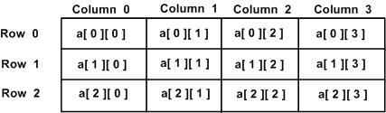

C 多次元配列
C 言語は多次元配列をサポートしています。多次元配列の宣言の一般的な形式は次のとおりです：
type name[size1][size2]...[sizeN];
例えば、次の宣言は3次元の 5 . 10 . 4 の整数配列を作成します：
int threedim[5][10][4];
2次元配列
多次元配列の最も簡単な形式は2次元配列です。2次元配列は、本質的に、1次元配列のリストです。x 行 y 列の2次元整数配列を宣言する形式は次のとおりです：
type arrayName [ x ][ y ];
ここで、type任意の有効な C データ型を使用できます。arrayNameは有効な C 識別子です。2次元配列は、x 行と y 列を持つテーブルと考えることができます。次は、3行と4列を含む2次元配列です：
int x[3][4];

したがって、配列内の各要素は、a[ i , j ] という形式の要素名を使用して識別されます。ここで、a は配列名、i と j は a 内の各要素を一意に識別する添字です。
2次元配列の初期化
多次元配列は、括弧内で行ごとに値を指定することで初期化できます。次は3行4列の配列です。
int a[3][4] = {
{0, 1, 2, 3} , /* 初始化索引号为 0 的行 */
{4, 5, 6, 7} , /* 初始化索引号为 1 的行 */
{8, 9, 10, 11} /* 初始化索引号为 2 的行 */
};
内部の入れ子括弧は省略可能です。次の初期化は上記と同等です：
int a[3][4] = {0,1,2,3,4,5,6,7,8,9,10,11};
2次元配列の要素へのアクセス
2次元配列の要素は、添字（つまり配列の行インデックスと列インデックス）を使用してアクセスします。例えば：
int val = a[2][3];
上記の文は、配列の3行目の4番目の要素を取得します。上の模式図で確認できます。次のプログラムを見てみましょう。2次元配列を処理するためにネストしたループを使用します：
例
#include <stdio.h>
int main ()
{
/*5行2列の配列*/
int a[5][2] = { {0,0}, {1,2}, {2,4}, {3,6},{4,8}};
int i, j;
/*配列内の各要素の値を出力する*/
for ( i = 0; i < 5; i++ )
{
for ( j = 0; j < 2; j++ )
{
printf("a[%d][%d] = %d\n", i,j, a[i][j] );
}
}
return 0;
}
上記のコードがコンパイルおよび実行されると、次の結果が生成されます：
a[0][0] = 0 a[0][1] = 0 a[1][0] = 1 a[1][1] = 2 a[2][0] = 2 a[2][1] = 4 a[3][0] = 3 a[3][1] = 6 a[4][0] = 4 a[4][1] = 8
上記のように、任意の次元の配列を作成できますが、一般的には作成する配列は1次元配列と2次元配列です。
その他の拡張
cjl小学生
838***556@qq.com
int a[2][5] = { /* 2 为该二维数组的行，即数组 a 内部的｛｝个数，5为该二维数组的列，即数组 a 内部｛｝中元素的个数，该数以多的为基准 */ {1,2,3,4,5}, {11,22,33} };cjl小学生
838***556@qq.com
humen_robot
562***709@qq.com
2次元配列に文字列を格納し、読み取る際は1次元配列として使用します。例えば：
#include<stdio.h> int main(){ int i; char names[6][50]={"马超","关平","赵云","张飞","关羽","刘备"}; for(i=0;i<6;i++) { printf("悍将名称：%s\n",names[i]); } return 0; }出力結果は次のとおりです：
humen_robot
562***709@qq.com
SageCat
107***2242@qq.com
2次元配列は論理的には正方行列であり、行と列で構成されています。
しかし、2次元配列は物理的には線形であり、行ごとに順番に格納され、メモリは連続しています。
2次元配列名のストライドは1行の長さです。例えば次の例では：
各行には4つの要素があり、各 int 型の要素は4バイトを占めるため、1行は16バイトになります。したがって、配列名 age に1を加えると、アドレスが16バイト増加します。これは配列名のストライドが1行の長さであることを示しています。
各要素に1を加える場合、アドレスが増加するのは1つの要素が占めるバイト数です。したがって、要素のストライドは要素自体のサイズになります。例えば：
例と実行結果：
#include <stdio.h> int main() { int age[6][4]; for (int i = 0; i < sizeof(age)/sizeof(age[0]) ; i++) { printf("age + %d address is %p\n",i, age + i); } for (int i = 0; i < sizeof(age) / sizeof(age[0]); i++) { for (int j = 0; j < sizeof(age[0]) / sizeof(int); j++) { printf("age[%d][0] + %d address is %p\n",i,j,&age[i][0]+j); } } }出力結果：
各要素が4バイトを占めていることがわかります。また、これら24個の要素のアドレスは連続しています。
SageCat
107***2242@qq.com
柏李挑一
407***531@qq.com
参考アドレス
2次元配列をパラメータとして渡す場合、すべての次元のサイズを指定するか、最初の次元を省略する必要があります。しかし、2番目以降の次元のサイズは省略できません。これはコンパイラの原理による制限です。実際、コンパイラは配列を次のように処理します：
配列 int a[m][n] があるとき、a[i][j] の値にアクセスする場合、コンパイラのアドレス指定方式は次のとおりです。
したがって、最初の次元のサイズは省略できますが、他の次元のサイズは省略できません。
2次元配列を定義するときに初期化する場合、最初の次元を省略することもできます。コンパイラは初期化文に基づいて最初の次元を自動的に決定します。
例：
#include<stdio.h> #include<stdlib.h> #include<string.h> int main() { char a[10][10]; memset(a,0,sizeof(a)); printf("%lu\n",sizeof(a)); for(int i=0;i<10;i++) { for(int j=0;j< 10;j++) printf("%d ",a[i][j]); } //system("PAUSE"); return 0; }実行出力結果：
柏李挑一
407***531@qq.com
参考アドレス